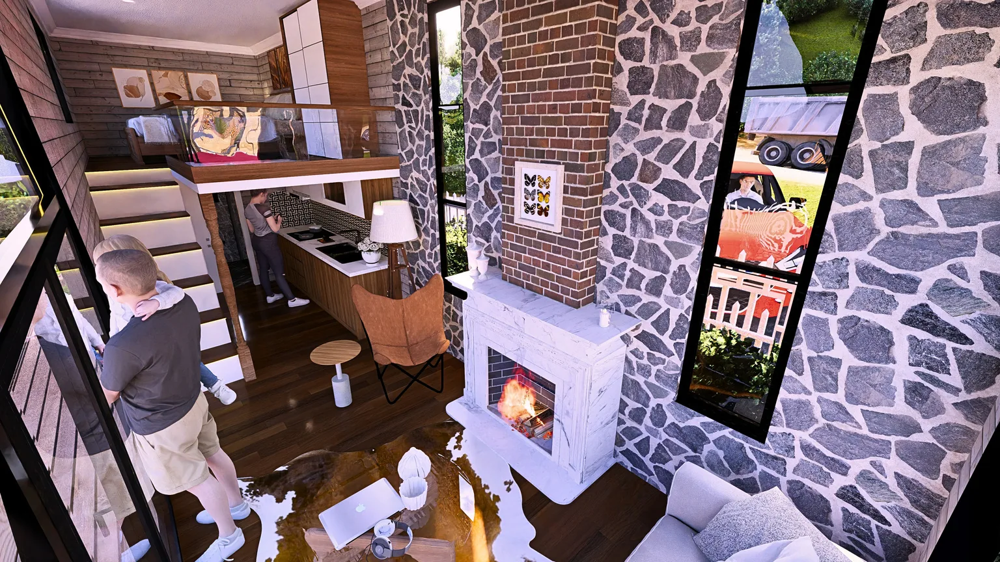

Weniger Haus.
Mehr Freiheit.
Architektonisch starke Tiny Houses für Deutschland und Europa — direkt aus eigener Produktion, individuell konfiguriert und für vier Jahreszeiten planbar.

Ein Zuhause, das nicht klein denkt.
Der Wert eines Tiny Houses wird nicht nur in Quadratmetern gemessen. Entscheidend sind Blickachsen, Tageslicht, Stauraum, Bewegungsfreiheit, Materialgefühl und die Möglichkeit, Wohnen, Arbeiten und Erholen sinnvoll zu verbinden.
Unsere Modelle werden in eigener Produktion gefertigt und können je nach Projekt mit Heiz- und Kühlsystem, Möblierung, Haushaltsgeräten, Solar- und Off-Grid-Komponenten ausgestattet werden.
Acht Charaktere.
Ein Lebensentwurf.
Wählen Sie nicht nur nach Größe. Wählen Sie nach Nutzung, Raumgefühl, Stil und Investitionsziel. Der interaktive Modellfinder führt direkt in die passende Konfiguration.

MC 1
Großzügige Glasfront, heller Wohnraum und ein komfortables Loft für Paare oder anspruchsvolle Einzelprojekte.
Planung, die Unsicherheit reduziert.
Statt eines klassischen Kontaktformulars begleiten wir Besucher Schritt für Schritt von der Inspiration bis zum qualifizierten Projektbriefing.
Design Studio
Modell, Länge, Fassade, Innenausbau, Energie und Komfort live zusammenstellen.
Modelle vergleichen
Personenzahl, Loft, Nutzung, Startpreis und Architektur nebeneinander prüfen.
Lieferung kalkulieren
Zielland, Postleitzahl, Zufahrt und Kranbedarf in die Budgetplanung einbeziehen.
Grundstück prüfen
Eine erste strukturierte Vorbewertung vor der verbindlichen Bauamt-Klärung.
Investment rechnen
Airbnb- und Glamping-Szenarien mit Auslastung, Rate und Betriebskosten simulieren.
Ressourcen sparen, ohne Lebensqualität zu streichen.
Weniger beheiztes Volumen, kontrollierter Materialeinsatz, kompakte Technik und optionale Eigenenergie können Verbrauch und laufende Kosten reduzieren. Reale Ergebnisse bleiben standort- und nutzungsabhängig.
Die Umgebung wird Teil des Hauses.
Große Öffnungen, Terrassenbezug und mobile Positionierung schaffen ein Raumgefühl, das weit über die Innenfläche hinausgeht.
Weniger Heizfläche
Kompakte Wohnfläche kann den Energiebedarf gegenüber größeren Gebäuden deutlich reduzieren.
Solar ready
Optionale PV-, Batterie- und Off-Grid-Pakete werden passend zum Verbrauchsprofil geplant.
Vier Jahreszeiten
Fenster, Dämmung, Lüftung und Heizung werden an Zielregion und Nutzungsart angepasst.
Direkt ab Werk
Eigene Produktion reduziert unnötige Zwischenstufen und erhöht die Konfigurationsfreiheit.
Materialqualität, die man sieht – und nicht sieht.
Die sichtbare Oberfläche ist nur die letzte Schicht. Langfristiger Komfort entsteht in Konstruktion, Verbindungstechnik, Dämmung, Fenstern, Installation und Qualitätskontrolle.
Stahl & Fahrgestell
Feuerverzinkte Stahlkonstruktion und projektbezogenes Fahrgestell als tragende Basis.
Thermowood & Fassade
Holz, Verbund- und Stehfalzflächen für eine robuste, charaktervolle Außenhaut.
Fenster & Tageslicht
Wärmegedämmte Rahmen und doppelt gehärtete Verglasung für Licht, Schutz und Komfort.
Innenausbau
Funktionsmöbel, lackierte Küche, Massivholz-Details und langlebige Oberflächen.

Ein nachvollziehbarer Produktionsprozess.
Kunden erhalten nicht nur ein Endprodukt. Sie erhalten einen strukturierten Ablauf mit Designfreigabe, Fertigungsphasen, Qualitätskontrolle und Transportvorbereitung.
Ein Produkt. Mehrere Geschäftsmodelle.
MC Tiny kann privater Wohnraum, Ferienhaus, Homeoffice, Gästehaus oder skalierbares Hospitality-Produkt sein.


Entscheidungen auf Basis von Wissen.
Kauf, Grundstück, Genehmigung, Winterbetrieb, Lieferung und Investment werden in strukturierten Themenclustern erklärt.
Tiny House in Deutschland kaufen
Von der Bedarfsanalyse über Herstellervergleich und Grundstück bis zur Lieferung.

Genehmigung richtig einordnen
Warum Nutzung, Dauer, Grundstück und lokale Vorschriften entscheidend sind.
Airbnb & Glamping kalkulieren
Auslastung, Rate, Betriebskosten, Positionierung und Rücklauf strukturiert planen.
Was Interessenten zuerst wissen möchten.
Für tiefergehende Fragen stehen die Academy, der Assistent und die Projektberatung bereit.
Alle 160 FragenIhr Tiny House beginnt mit einer klaren Vorstellung.
Konfigurieren Sie Modell, Materialien, Komfort und Energie. Speichern Sie den Entwurf und senden Sie ihn direkt an unser Projektteam.